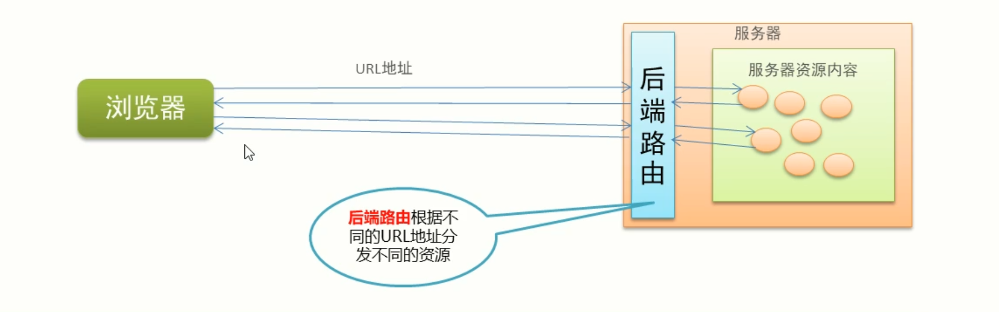

Vue 路由
本文最后更新于：2021年5月31日 晚上
1.路由的基本概念与原理
路由是一个比较广义和抽象的概念，路由的本质就是对应关系
在开发中，路由分为：
- 后端路由
- 前端路由
1.1 路由
1.1.1 后端路由
- 概念：根据不同的
用户URL请求返回不同的内容 - 本质：
URL请求地址与服务器资源之间的对应关系
1.1.2 SPA(Single Page Application)
后端渲染（存在性能问题）
Ajax 前端渲染（前端渲染提高性能，但是不支持浏览器的前进后退操作）
SPA 单页面应用程序： 整个网站只有一个页面，内容的变化通过 Ajax 局部更新实现，同时支持浏览器地址栏的前进和后退操作
SPA 实现原理之一：基于 URL 地址的 hash（hash 的变化会导致浏览器记录访问历史的变化，但是 hash 的变化不会触发新的 URL 请求）
在实现 SPA 过程中，最核心的技术点就是前端路由
1.1.3 前端路由
- 概念： 根据不同的
用户事件，显示不同的页面内容 - 本质：
用户事件与事件处理函数之间的对应关系

1.1.4 实现简易前端路由
- 基于 URL 中的 hash 实现（点击菜单的时候改变 URL 的 hash，根据 hash 的变化控制组件的切换）
1 | |
1.2 Vue Router
包含的功能
- 支持 html5 历史模式 或 hash 模式
- 支持嵌套路由
- 支持路由参数
- 支持编程式路由
- 支持命名路由
2.Vue-router 的基本使用
2.1 基本使用步骤
- 引入相关的库文件
- 添加路由链接
- 添加路由填充位
- 定义路由组件
- 配置路由规则并创建路由实例
- 把路由挂载到 Vue 根实例中
引入相关的库文件
1 | |
添加路由链接
1 | |
添加路由填充位
1 | |
定义路由组件
1 | |
配置路由规则并创建路由实例
1 | |
把路由挂载到 Vue 根实例中
1 | |
2.2 路由重定向
路由重定向指的是：用户在访问地址 A 的时候，强制用户跳转到地址 c，从而展示特定的组件页面；通过路由规则的 redirect 属性，指定一个新的路由地址，可以很方便的设置路由的重定向
1 | |
3.嵌套路由用法
3.1 嵌套路由功能分析
- 点击父级路由链接显示模板内容
- 模板内容中又有子级路由链接
- 点击子级路由链接显示子级模板内容
4.动态路由匹配
通过动态路哟参数的模式进行路由匹配
1 | |
1 | |
4.1 路由组件传递参数
$route 与对应路由形成高度耦合，不够灵活，所以可以使用 props 将组件和路由解耦
props 的值为布尔类型
1 | |
props 的值为对象类型
1 | |
props 的值为函数类型
1 | |
5.Vue-router 编程式导航
5.1 页面导航的两种方式
声明式导航： 通过点击链接实现导航的方式，叫做声明式导航
例如：普通网页的 a 链接
编程式导航： 通过调用 JavaScript 形式的 API 实现的导航的方式，叫做编程式导航
例如：普通网页中的 location.href
5.2 编程式导航基本用法
- this,$router.push(‘hash 地址’)
- this.$router.gon(n)
1 | |
本博客所有文章除特别声明外，均采用 CC BY-SA 4.0 协议 ，转载请注明出处！